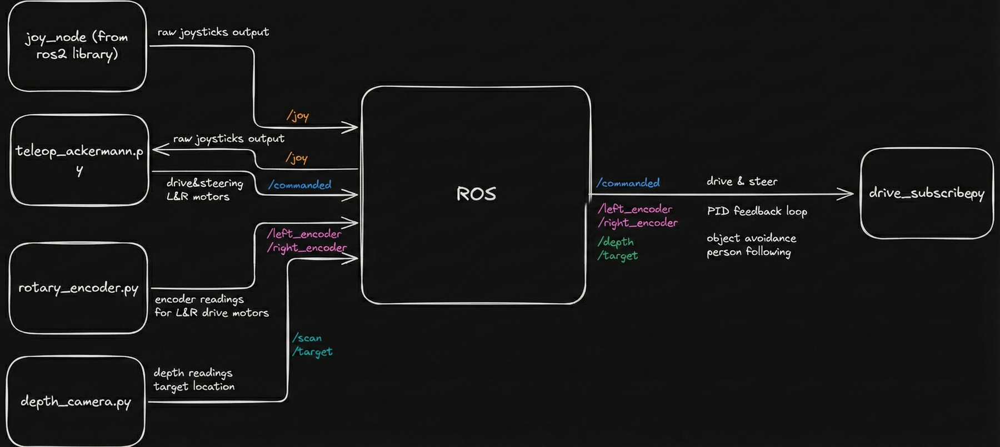

Principles of Integrated Engineering Final Group Project
Project AURA: Luggage-carrying Robot
I developed ROS 2 software architecture and robotics integration for an autonomous assistive cart.
My contributions
ROS 2 architecture
- Architected the ROS 2 software system: modular nodes for sensors, motor control, perception, user input, and autonomous behaviors.
- Defined topics and interfaces to decouple subsystems so components could be developed and tested independently.
- Ensured the same hardware and software stacks supported both manual teleoperation and autonomous modes running on a Raspberry Pi.
- Focused the design on modularity and extensibility so new behaviors could be added without a full redesign.

Depth perception
The person-tracking pipeline used the RealSense infrared stream to look for highly reflective tape. I thresholded the IR image, cleaned the mask with a morphology kernel, found contours, filtered them by minimum and maximum area, and rejected detections that failed a depth-distance check. A Kalman filter carried the tracked position through brief dropouts, which kept the cart's follow behavior from twitching when the marker was partially hidden.
- Integrated an Intel RealSense depth camera into the ROS 2 perception pipeline as the primary front-facing depth sensor.
- Streamed depth and infrared topics into ROS 2, using depth to validate marker distance and infrared reflectivity to identify the target.
- Tuned perception thresholds and transforms against live sensor data on the physical robot.
Human following
The cart followed a reflective target by converting the camera tracker output into motion commands through the same drivetrain interface used by manual control. Indoor tests used reflective tape on a cone as a repeatable proxy target, which made it easier to tune distance, heading, and stop behavior before testing with a person.
Motor, encoder, and control interface
The software supports both joystick driving and autonomous following through one drivetrain command layer. That made hardware testing safer: we could take manual control when needed without changing the rest of the ROS graph.
- Implemented the ROS 2 to motor-controller interface and drivetrain command layer used by both manual and autonomous code.
- Integrated wheel encoder feedback into ROS 2 and converted encoder ticks into odometry and motion estimates.
- Monitored encoder feedback to validate motion and detect discrepancies between commanded and actual wheel motion.
- Exposed the drivetrain control through a single ROS 2 interface so higher-level behaviors issue motion commands without hardware coupling.
Safety & fault handling
- Separated high-level behavior from low-level actuator control to limit unsafe autonomous commands.
- Used command timeouts and simple stop-on-loss-of-signal semantics to prevent runaway behaviors during communication failures.
- Tested failure cases on hardware to validate that stopping and emergency behaviors worked in practice.
Results
- Built a working ROS 2 software stack for an autonomous assistive cart deployed on real hardware.
- Integrated RealSense depth perception, motor/encoder interfaces, and manual/autonomous control modes.
- Demonstrated reliable short-range human-following behavior using reflective target tracking and depth validation.
- Delivered a modular architecture that supports future behaviors and sensor swaps without major rewrites.
Source code and website
The full project writeup is on the Project AURA site, and the ROS code is available on GitHub.